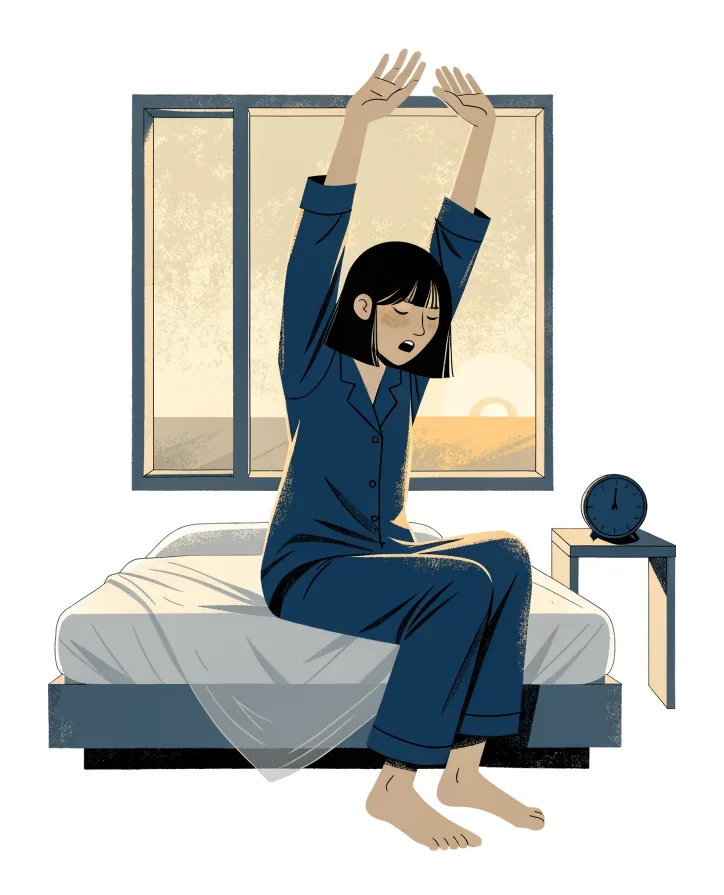
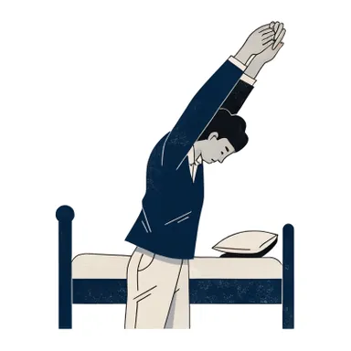
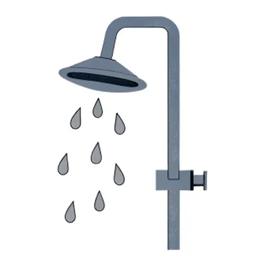
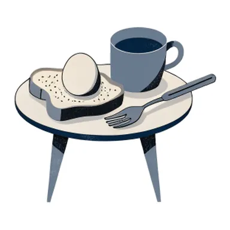
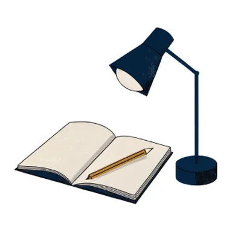
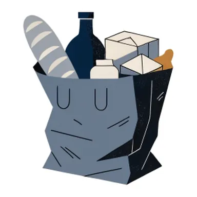

먼저 생각해 보세요.
halb sieben은 몇 시일까요?
독일어의 halb는 '그 시각이 되기 30분 전'이라는 뜻이에요. halb sieben은 7시가 되기 30분 전이에요.

아침 여섯 시 반, 알람이 울려요. 쾰른에서 보내는 Yuna의 하루가 시작돼요.
눌러서 들어 보세요.
먼저 생각해 보세요.
halb sieben은 몇 시일까요?
독일어의 halb는 '그 시각이 되기 30분 전'이라는 뜻이에요. halb sieben은 7시가 되기 30분 전이에요.
Lektion 7의 낱말 다섯 개를 다시 떠올려 보세요.
문법 trennbare Verben (aufstehen, anfangen), Satzklammer, zuerst, dann, danach
이 과를 마치면 나의 하루를 시간 순서대로 독일어로 말할 수 있어요.
쉬는 시간이에요. Elif는 한국 학생의 하루가 궁금해요.
들으면서 찾아보세요. 한국에서 Yuna의 학교는 몇 시에 끝나나요?
토요일 아침 식탁이에요. Sabine가 오늘 계획을 물어요.
들으면서 찾아보세요. Emma가 오늘 가장 먼저 하는 일은 무엇인가요?
두 대화를 듣고 답하세요.
In Korea steht Yuna um sieben Uhr auf.
In Köln fängt die Schule um halb neun an.
쾰른에서는 학교가 8시에 시작해요. 8시 반은 한국 학교예요.
Yuna kommt in die Stadt mit.
한국에서 Yuna의 학교는 몇 시에 끝나나요?
Emma가 토요일에 가장 먼저 하는 일은 무엇인가요?
토요일 저녁 식사는 몇 시인가요?
낱말 20개예요. 낱말이나 예문 앞의 단추를 누르면 소리가 나요. 명사는 der, die, das를 색으로 구분했어요.

aufstehen 일어나다
Ich stehe um halb sieben auf.나는 여섯 시 반에 일어나요.

duschen 샤워하다
Zuerst dusche ich.먼저 샤워를 해요.

frühstücken 아침을 먹다
Ich frühstücke mit Emma.나는 Emma와 아침을 먹어요.
anfangen (du fängst an, er fängt an) 시작하다
Die Schule fängt um acht an.학교는 여덟 시에 시작해요.
früh 이른, 일찍
Ich stehe früh auf.나는 일찍 일어나요.
spät 늦은, 늦게
Was? So spät!뭐? 그렇게 늦게!

die Hausaufgaben (Pl.) 숙제
Ich mache Hausaufgaben.나는 숙제를 해요.
aufräumen 치우다, 정리하다
Emma räumt ihr Zimmer auf.Emma는 자기 방을 치워요.
das Zimmer, die Zimmer 방
Das ist mein Zimmer.여기는 내 방이에요.

einkaufen 장을 보다, 쇼핑하다
Wir kaufen in der Stadt ein.우리는 시내에서 장을 봐요.
mitkommen 같이 가다
Yuna kommt mit.Yuna도 같이 가요.
zurückkommen 돌아오다
Wann kommt ihr zurück?너희는 언제 돌아오니?
anrufen 전화하다
Ich rufe Freunde an.나는 친구들에게 전화해요.
kochen 요리하다
Papa kocht heute.오늘은 아빠가 요리해요.
fernsehen (du siehst fern, er sieht fern) 텔레비전을 보다
Am Abend sehe ich fern.저녁에 나는 텔레비전을 봐요.
schlafen (du schläfst, er schläft) 자다
Milo schläft gern.Milo는 자는 걸 좋아해요.
ins Bett gehen 자러 가다
Um elf gehe ich ins Bett.열한 시에 나는 자러 가요.
am Morgen, am Nachmittag, am Abend 아침에, 오후에, 저녁에
Am Nachmittag mache ich Hausaufgaben.오후에 나는 숙제를 해요.
zuerst, dann, danach 먼저, 그다음에, 그 뒤에
Zuerst dusche ich. Dann frühstücke ich.먼저 샤워를 해요. 그다음에 아침을 먹어요.
Die Schule ist aus. 학교가 끝났어요.
Um vier ist die Schule aus.네 시에 학교가 끝나요.
이 과의 낱말로 여덟 문제를 풀어요.
친구끼리는 시각을 이렇게 말해요. nach는 '지나서', vor는 '전'이라는 뜻이에요. halb는 다음 시각이 되기 30분 전이에요. 줄을 누르면 소리가 나요.
예문을 보고 답해 보세요.
aufstehen의 auf는 문장에서 어디로 갔나요?
규칙
aufstehen, anfangen, einkaufen 같은 동사는 문장에서 둘로 나뉘어요. 앞부분 auf, an, ein은 문장 맨 끝으로 가고, 나머지 부분은 주어에 맞게 변해서 둘째 자리에 와요.
| 원형 | 문장 |
|---|---|
| aufstehen | Ich stehe um sieben auf. |
| anfangen | Die Schule fängt um acht an. |
| einkaufen | Wir kaufen in der Stadt ein. |
| fernsehen | Am Abend sehe ich fern. |
주의 자주 나오는 앞부분은 auf, an, ein, mit, zurück, fern이에요. anfangen과 fernsehen은 5과에서 배운 것처럼 모음도 바뀌어요. du fängst an, er sieht fern.
예문을 보고 답해 보세요.
질문 Wann kommt ihr zurück?에서 zurück은 어디에 있나요?
규칙
나뉘는 동사는 문장의 다른 말을 괄호처럼 감싸요. 동사가 둘째 자리에 오고 앞부분이 맨 끝에 와요. 질문에서도 같아요.
| 1 | 2 동사 | 가운데 | 끝 |
|---|---|---|---|
| Ich | stehe | um halb sieben | auf. |
| Zuerst | räume | ich mein Zimmer | auf. |
| Wann | kommt | ihr | zurück? |
주의 독일어 문장은 끝까지 들어야 뜻을 알 수 있어요. Ich kaufe heute mit Emma in der Stadt … ein.
예문을 보고 답해 보세요.
Dann 바로 다음에는 무엇이 오나요?
규칙
순서를 말할 때는 zuerst, dann, danach를 문장 맨 앞에 써요. 동사는 언제나 둘째 자리이므로, 주어는 동사 뒤로 가요.
| 1 | 2 동사 | 나머지 |
|---|---|---|
| Zuerst | dusche | ich. |
| Dann | frühstücke | ich mit Emma. |
| Danach | gehe | ich in die Schule. |
주의 Dann ich frühstücke는 틀린 문장이에요. Dann frühstücke ich가 맞아요. 4과에서 배운 Am Montag haben wir Mathe와 같은 규칙이에요.
Lukas의 하루를 듣고 답하세요.
Der Tag von Lukas
Lukas Ich stehe um Viertel vor sieben auf.
Lukas Zuerst frühstücke ich. Dann gehe ich in die Schule.
Lukas Die Schule ist um halb zwei aus.
Lukas Am Nachmittag spiele ich Fußball. Danach mache ich Hausaufgaben.
Lukas Um zehn gehe ich ins Bett.
Lukas는 몇 시에 일어나나요?
학교는 몇 시에 끝나나요?
Lukas가 오후에 먼저 하는 일은 무엇인가요?
Lukas는 몇 시에 자러 가나요?
시각을 듣고 고르세요.
몇 시인가요?
Es ist halb neun.
몇 시인가요?
Es ist Viertel nach drei.
몇 시인가요?
Es ist Viertel vor zwölf.
몇 시인가요?
Es ist zehn nach sechs.
Emma의 토요일 계획표를 보고 답하세요.
Emmas Samstag
| Uhrzeit | Plan |
|---|---|
| 9.00 | aufstehen |
| 9.30 | frühstücken |
| 10.00 | Zimmer aufräumen |
| 14.00 | mit Yuna einkaufen |
| 16.30 | Elif treffen |
| 19.00 | fernsehen |
Emma steht um neun Uhr auf.
Um halb zehn räumt Emma ihr Zimmer auf.
9시 30분에는 아침을 먹어요. 방은 10시에 치워요.
Was macht Emma um zwei Uhr?
Wann trifft Emma Elif?
문장 끝에 올 알맞은 말을 고르세요.
Ich stehe um sieben .
Die Schule fängt um acht .
Wir kaufen in der Stadt .
Am Abend sehe ich .
Emma räumt ihr Zimmer .
Wir gehen in den Park. Kommst du ?
낱말을 순서대로 눌러 문장을 만드세요.
나는 일곱 시에 일어나.
학교는 여덟 시에 시작해.
너희는 언제 돌아와?
그다음에 우리는 장을 봐.
순서가 맞는 문장을 고르세요.
알맞은 문장은 무엇인가요?
알맞은 문장은 무엇인가요?
알맞은 문장은 무엇인가요?
시각과 읽는 법을 짝지으세요.
듣고 그대로 써 보세요.
Ich stehe um sieben Uhr auf. 나는 일곱 시에 일어나.
Wann gehst du ins Bett? 너는 몇 시에 자?
Dann kaufen wir ein. 그다음에 우리는 장을 봐.
Wann stehst du auf? 몇 시에 일어나?
Ich stehe um … auf. 나는 …시에 일어나.
Die Schule fängt um … an. 학교는 …시에 시작해.
Um … gehe ich ins Bett. …시에 자러 가.
Zuerst … 먼저 …
Dann … 그다음에 …
Danach … 그 뒤에 …
Es ist halb … …시 30분 전이야.
Es ist Viertel nach … / Es ist Viertel vor … …시 15분이야. / …시 15분 전이야.
대화 B에서 역할을 하나 고르세요. 상대의 말은 음성으로 나오고, 내 차례에는 직접 말해요.
내가 일어나는 시각, 학교가 시작하는 시각, 자러 가는 시각을 독일어로 적으세요. 완성된 문장을 소리 내어 읽어 보세요.
Ich stehe um halb sieben auf.
Die Schule fängt um neun Uhr an.
Am Nachmittag mache ich Hausaufgaben.
Um elf gehe ich ins Bett.
Mein Tag
나의 하루를 아침부터 저녁까지 순서대로 써 보세요. zuerst, dann, danach를 넣어요.
Ich stehe um sieben Uhr auf. Zuerst dusche ich. Dann frühstücke ich. Die Schule fängt um halb neun an. Am Nachmittag mache ich Hausaufgaben. Danach treffe ich Freunde. Am Abend sehe ich fern. Um elf gehe ich ins Bett.
다 쓴 뒤에 확인해 보세요.
Ich kann meinen Tag beschreiben.나의 하루를 말할 수 있어요.
Ich kann die Uhrzeit mit halb und Viertel sagen.halb와 Viertel로 시각을 말할 수 있어요.
Ich kann der Reihe nach erzählen.일을 순서대로 이야기할 수 있어요.